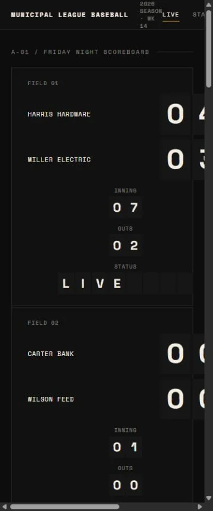

RECORD 30 / dcf7be1796
MUNICIPAL LEAGUE BASEBALL — Civic Baseball System
View static page ↗

Score breakdown
Skill fidelity25 / 25
Prompt fidelity25 / 25
Design quality14 / 20
Technical quality14 / 15
Responsive quality2.8 / 10
Originality3 / 5
Review note
Clean but sparse scoreboard treatment that feels closer to a component demo; document overflow appears across the full probe set.
Violations
None recorded.
Evidence provenance
- Artifact ID
- dcf7be1796
- Source output
- Open archived source Download
- Baseline
- Baseline 001 / frozen snapshot